Yield curve projections ensured to pass through pre-specified future points
The objective here is to show how yield curve projections can be made such that they pass through certain pre-specified future yield curve fix-points.
In certain forecasting settings, or with the aim to generate yield curve scenarios, it may be desirable to steer the yield curve dynamics such that it is ensured that future realisations of the yield curve passes through one or more pre-set connection points/yield curves. For example, with the advent of short rates being close to zero (i.e. the zero-lower-bound environment that emerged in the US in 2009) there was (and still is) considerable uncertainty among market participants about when and how the curve may normalise towards historical levels. In such an environment, and more generally for any stress-test scenario, it is useful to impose a certain future yield curve path, while, to the greatest extent possible, obeying the estimated dynamics of the model.
Below I show how this can be done in the context of the Nelson-Siegel model - and I show how the dynamic Nelson-siegel model can be estimated with OLS, as well as with MATLAB's state-space toolbox.
Contents
Finding the parameters of the Dynamic Nelson-Siegel (NS) model
US yield curve data from the FRED database are extracted using MATLAB's datafeed toolbox. Daily data are collected for monthly maturities (3, 6, 12, 24, 36, 60, 84, 120), covering the period from sDate to eDate (see script below).
warning('off') url = 'https://fred.stlouisfed.org/'; % defining connection to FRED c = fred(url); series = {'DGS3MO','DGS6MO','DGS1','DGS2',... % selecting variables 'DGS3','DGS5','DGS7','DGS10'}; sDate = {'01-jan-1983'}; % start date eDate = {'31-jan-2018'}; % end date Y = fetch(c,series,sDate,eDate); % getting data from FRED tau = [3;6;12;24;36;60;84;120]; dates = Y(1).Data(:,1); nObs = length(dates); nTau = length(tau); Yields = NaN(nObs,nTau); for (j=1:nTau) % converting the downloaded Yields(:,j) = Y(j).Data(:,2); % structured data into end % a data matrix indx_obs = max(~isnan(Yields)')'; Yields = Yields(indx_obs,:); % collecting data from dates dates = dates(indx_obs,1); % where observations are % available nObs = length(dates); % recalc number of observations indx_ = [1:22:nObs]'; figure % plotting yield data (every surf(tau,dates(indx_,1),Yields(indx_,:)), % 22nd observation to datetick('y','mmm-yy'), % avoid that the plot gets xticks([3;6;12;24;36;60;84;120]), % too cluttered xlabel('Maturity (month)'), zlabel('Yield (%)'), view(-124,36)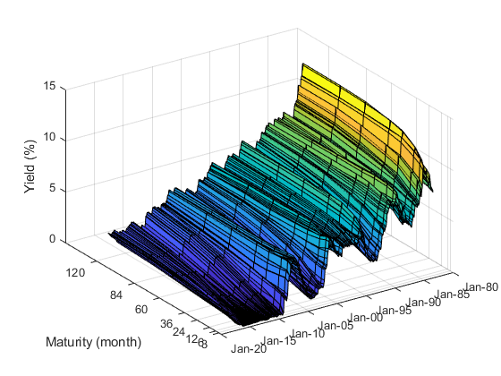
The Nelson-Siegel model can be formulated as a state-space model following Diebold and Li (2006):
observation equation: 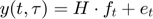
state equation: 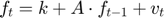
With 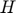 containing the Nelson-Siegel loadings and the state equation representing a one-lag VAR model.
There are basically two ways whereby the parameters of the model can be estimated: (1) linear regression, and (2) in state-space form via the Kalman filer. Here, both methods are demonstrated (note that second method requires MATLAB's econometric toolbox).
(1) Linear regression:
H_ = @(l_,t_) [ ones(length(t_),1), ... (1-exp(-l_.*t_))./(l_.*t_), ... (1-exp(-l_.*t_))./(l_.*t_)-exp(-l_.*t_)]; % the NS loading structure
The optimal loading structure is determined on a grid of possible values for the one parameter (l) that defines the NS loading structure:
l = [0.001:0.001:0.20]'; % l is found with a precision of 2 decimals out_ = NaN(length(l),2); for (j=1:length(l)) H = H_(l(j,1),tau); f = H\Yields'; % OLS to determine yield curve factors Y_fit = (H*f)'; % fitted yields err2 = sum(sum(Yields-Y_fit).^2); % sum of squared approximation errors out_(j,:) = [l(j,1),err2]; end indx_ = find(out_(:,2)==min(out_(:,2))); % index of the best fitting l-value l_ols = l(indx_,1); H_ols = H_(l_ols,tau); f_ols = H_ols\Yields'; Y_ols = (H_ols*f_ols)';
The final step is then to determine the dynamic evolution of the yield curve factors:
X = [ones(1,nObs-1); f_ols(:,1:end-1)]'; y = f_ols(:,2:end)'; P_ = X\y; k_ols = P_(1,:)'; A_ols = P_(2:end,:)';
(2) state-space model
MATLAB's state-space model relies on the notation suggested by Durbin and Koopman, so the state and observation equations have the following form, respectively (see https://www.mathworks.com/help/econ/what-are-state-space-models.html#buzf8g_):
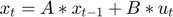
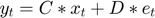
which, of course, is very similar to the formulation of the dynamic Nelson-Siegel model above. One issue, though, pertains to the constants in the state equation. The Durbin and Koopman formulation does not directly cater for constants in the state equation. However, there is a solution to this: additional states can be included, one for each constant. The state values of these will be equal to 1 for all t observations, and the matrix A is then ammended by a 3-by-3 diagonal matrix (because there are 3 factors in the Nelson-Siegel model), the B matrix is ammeded by a 3-by-3 matrix of zeros, and the C matrix is ammended with a nTau-by-3 matrix of zeros (where nTau is the number of maturities for which yields are observed).
Consequently, the dynamic Nelson-Siegel model can be cast in MATLAB's state-space toolbox in the following way, where the parameters to be estmated are indicated by NaN's. An alternative this model definition, is to use a parameter-mapping function, where the parameters are defined using parameter numbering directly (see MATLAB's documentation for more information on this).
A0 = [ 0.95 0.05 0.05 ;
0.05 0.95 0.05 ;
0.05 0.05 0.95 ];
k0 = [ 0; 0; 0 ];
B0 = [ 0.20 0.00 0.00 ;
0.01 0.20 0.00 ;
0.01 0.01 0.20 ];
B0(B0==0) = [];
C0 = 0.06;
D0 = 0.05;
p0 = [ A0(:); k0; B0(:); C0; D0 ];
lb = [ -2*ones(9,1); -inf*ones(3,1); -10*ones(6,1); 0.001; -10 ];
ub = [ 2*ones(9,1); inf*ones(3,1); 10*ones(6,1); 1.000; 10 ];
nP = length(p0);
DNS_model = ssm(@(p_) parameter_map(p_,tau) );
[EstDNS,p_hat,Cov_hat,logL,Output] = estimate( DNS_model, Yields, p0, ...
'lb', lb, 'ub', ub, ...
'Univariate', true, ...
'CovMethod', 'sandwich',...
'display', 'off');
f_filter = filter(EstDNS,Yields)';
f_smooth = smooth(EstDNS,Yields)';
A_statespace = EstDNS.A(1:3,1:3) ;
k_statespace = diag(EstDNS.A(1:3,4:6));
Here we plot the extracted factors to compare OLS and state-space estimates.
figure
plot(dates, [f_ols(1,:)' f_filter(1,:)' ]), title('Extracted Level Factors')
datetick('x','mmm-yy'), legend('OLS','filter' )
figure
plot(dates, [f_ols(2,:)' f_filter(2,:)' ]), title('Extracted Slope Factors')
datetick('x','mmm-yy'), legend('OLS','filter' )
figure
plot(dates, [f_ols(3,:)' f_filter(3,:)' ]), title('Extracted Curvature Factors')
datetick('x','mmm-yy'), legend('OLS','filter' )
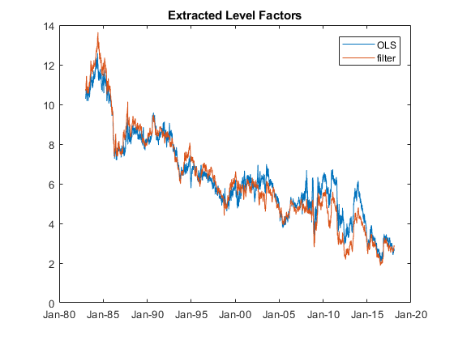  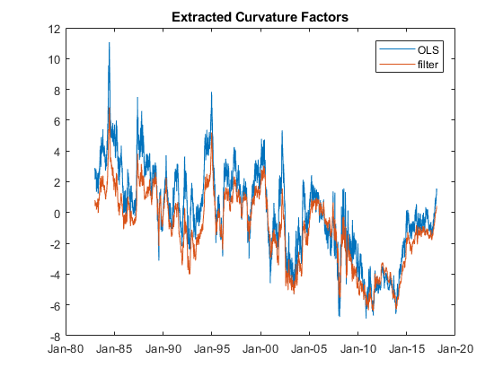
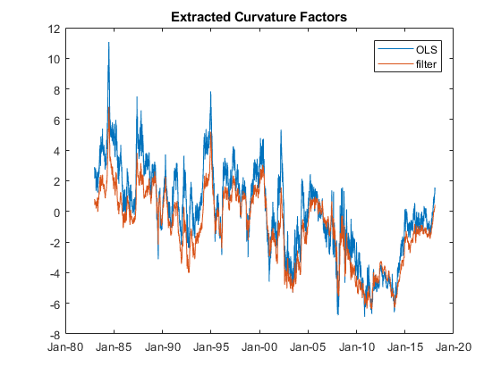 And, the insample fit of the two estimation procedures are illustrated using the root mean squared errors (in basis points).
RMSE_ols = sqrt(mean((Yields - (H_ols*f_ols)').^2)).*100;
RMSE_SS = sqrt(mean((Yields - (EstDNS.C(:,1:3)*f_filter(1:3,:))').^2)).*100;
RMSE_table = table(RMSE_ols',RMSE_SS');
RMSE_table.Properties.RowNames = series;
RMSE_table.Properties.VariableNames = {'OLS','State_Space'};
RMSE_table
RMSE_table =
8×2 table
OLS State_Space
______ ___________
DGS3MO 9.2595 8.1139
DGS6MO 5.3663 5.9204
DGS1 8.4358 7.9664
DGS2 6.7438 5.0956
DGS3 3.379 4.2489
DGS5 7.7498 6.7639
DGS7 5.5122 4.8881
DGS10 5.6786 5.7437
The persistency of the two estimation methods are compared using the eigenvalues of the VAR for the underlying yield factors:
disp(' OLS State-Space ')
disp(sort([abs(eig(A_ols)) abs(eig(A_statespace))]))
OLS State-Space
0.9914 0.9973
0.9984 0.9980
0.9997 0.9998
Generating conditional yield curve scenarios
To ensure that generated yield curve scenarios pass through one or more future fix-points, it is instructuve to rewrite the dynamic equation for the yield curve factors using the eigen value decomposition of the autoregressive matrix, and to use the mean-adjusted VAR, where m is the mean m=(I-A)^(-1)*k:
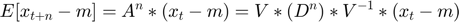,
where V is a matrix of eigen vectors, and D is a diagonal matrix of corresponding eigen values.
Any future s-step ahead target yield curve is defined by its yield curve factor values, 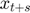. It is therefore possible to find out how the persistance of the dynamic equation (ie the eigen values colleced in D) needs to be changed, such that the starting values 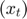 are evolved forward to meet :
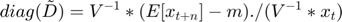.
The element-division (./) works here because D is diagonal.
Note that the eigen vectors 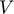 are left unchanged - the economic interpretation of this is that the yield curve factors preserve their meaning as Level, (minus)slope and curvature, and only the persistance of the factors is changed, as a consequence of the applied transformation. Furthermore, the adjustment may lead to complex numbers appearing in the dynamics of the target-adjusted VAR model, for this reason, the real part of the projected yield curve factors is extracted (see below).
Assume now, that three scenarios are simulated having the same end-yield-curve two years (720 observations) from now, but where the path towards this end point differs across the scenarios. In scenario A, it is assumed that yields remain around there current levels for one and a half year (540 observations) after which yields converge to their long term levels; Scenario B assumes that convergence to the long-term curve happens quickly, within 3 months (90 observations); and Scenario A assumes that convergence happens according to the uncovered historical regularities, i.e. this scenario uses the the estimated model parameters directly.
To highlight the mean convergence paths we do not add innovation noise to the projected paths. But, this can naturally be done by drawing random innovations from the error term distributions of the state and observation equations.
x_t = f_filter(1:3,end); % starting yield curve factors Y_T = mean(Yields)'; % example long-run yield curve, here the historical average x_T = EstDNS.C(:,1:3)\Y_T; % corresponding yield curve factors A_ = EstDNS.A(1:3,1:3); k_ = diag(EstDNS.A(1:3,4:6)); m_ = (eye(3)-A_)\k_; [V_,D_] = eig(EstDNS.A(1:3,1:3));
... Scenario A
nT = 720; nA1 = 540; nA2 = nT-nA1; A1 = V_* diag((((V_^-1)*(x_t-m_)) ./ (V_\(x_t-m_))).^(1/nA1)) *V_^(-1); % adjusted dynamics x_A = NaN(3,nT); x_A(:,1) = x_t; for (j=2:nA1) x_A(:,j) = m_ + A1* (x_A(:,j-1)-m_); end A2 = V_* diag((((V_^-1)*(x_T-m_)) ./ (V_\(x_A(:,nA1)-m_))).^(1/nA2)) *V_^(-1); % adjusted dynamics for (j=nA1+1:nT) x_A(:,j) = m_ + A2* (x_A(:,j-1)-m_); end x_A = real(x_A); % extracting the real pfigure % of the yield curve % of the yield % curve factors
... Scenario B
nT = 720; nB1 = 90; nB2 = nT-nB1; B1 = V_* diag((((V_^-1)*(x_t-m_)) ./ (V_\(x_t-m_))).^(1/nB1)) *V_^(-1); % adjusted dynamics x_B = NaN(3,nT); x_B(:,1) = x_t; for (j=2:nB1) x_B(:,j) = m_ + B1* (x_B(:,j-1)-m_); end B2 = V_* diag((((V_^-1)*(x_T-m_)) ./ (V_\(x_B(:,nB1)-m_))).^(1/nB2)) *V_^(-1); % adjusted dynamics for (j=nB1+1:nT) x_B(:,j) = m_ + B2* (x_B(:,j-1)-m_); end x_B = real(x_B); % extracting the real pfigure % of the yield curve % of the yield % curve factors
... Scenario C
nT = 720; x_C = NaN(3,nT); x_C(:,1) = x_t; for (j=2:nT+1) x_C(:,j) = m_ + A_* (x_C(:,j-1)-m_); end x_C = real(x_C); % extracting the real pfigure % of the yield curve % of the yield % curve factors
Plotting projected yield curve factors and yields
The projected yields are calculated in the following way:
Y_A = (EstDNS.C(:,1:3)*x_A)'; Y_B = (EstDNS.C(:,1:3)*x_B)'; Y_C = (EstDNS.C(:,1:3)*x_C)';
And, the projected factors and yields can then be plotted:
figure
subplot(1,2,1), plot(x_A'), title('Scenario A: yield curve factors')
subplot(1,2,2), plot(Y_A(:,[1 6 8])), title('Scenario A: Yields'), legend('3M','5Y','10Y'),
ylim([0 8])
figure
subplot(1,2,1), plot(x_B'), title('Scenario B: yield curve factors')
subplot(1,2,2), plot(Y_B(:,[1 6 8])), title('Scenario B: Yields'), legend('3M','5Y','10Y'),
ylim([0 8])
figure
subplot(1,2,1), plot(x_C'), title('Scenario C: yield curve factors')
subplot(1,2,2), plot(Y_C(:,[1 6 8])), title('Scenario C: Yields'), legend('3M','5Y','10Y'),
ylim([0 8])
 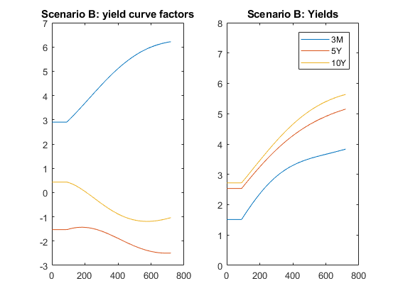 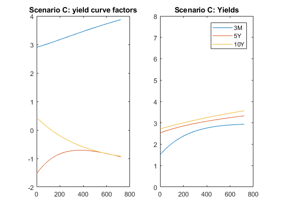
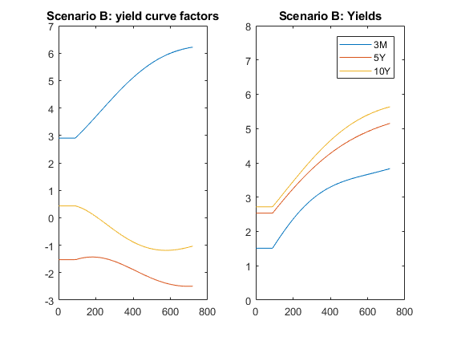 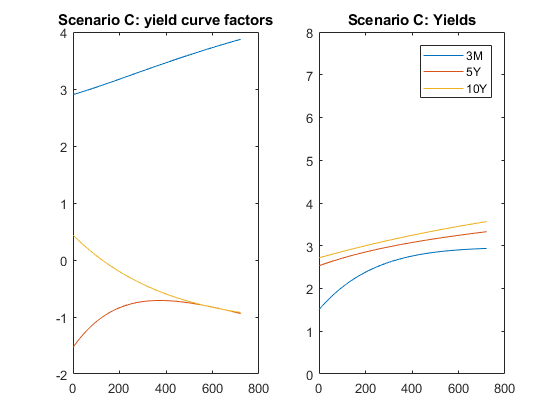 Comparing the target values of the yield curve factors and the end point of the projected factors:
x_table = table( x_T, x_A(:,end), x_B(:,end), x_C(:,end) );
x_table.Properties.RowNames = {'Level','slope','Curvature'};
x_table.Properties.VariableNames = {'Target','ScenarioA','ScenarioB','ScenarioC'};
x_table
x_table =
3×4 table
Target ScenarioA ScenarioB ScenarioC
_______ _________ _________ _________
Level 6.2183 6.2183 6.2183 3.8718
slope -2.4927 -2.4927 -2.4927 -0.93886
Curvature -1.0321 -1.0321 -1.0321 -0.92074
Helper function
function [A,B,C,D,Mean0,Cov0,StateType] = parameter_map(p_,tau) % % This function maps input parameters to the matrix form used by % the state-space toolbox. % nTau = length(tau); A1 = reshape(p_(1:9,1),3,3); A2 = diag(p_(10:12)); A = [ A1 A2; zeros(3,3) eye(3) ]; B1 = [ p_(13) 0 0 ; p_(14) p_(16) 0 ; p_(15) p_(17) p_(18) ]; B2 = zeros(3,3); B = [ B1; B2 ]; C1 = [ ones(nTau,1), ... (1-exp(-p_(19).*tau))./(p_(19).*tau), ... (1-exp(-p_(19).*tau))./(p_(19).*tau)-exp(-p_(19).*tau)]; % the NS loading structure C2 = zeros(nTau,3); C = [ C1 C2 ]; D = diag(p_(20)*ones(nTau,1)); Mean0 = []; Cov0 = []; StateType = [ 0 0 0 1 1 1 ]; end function [S] = recSum(M,c,n) % % Recursive matrix sum: S = sum_{j=1}^{n} M^j * c % M : an z-by-z matrix % c : a vector z-by-1 % n : number of recursions c = c(:); S = zeros(length(c),1); for (j=0:n) S = S + M^j * c; end end